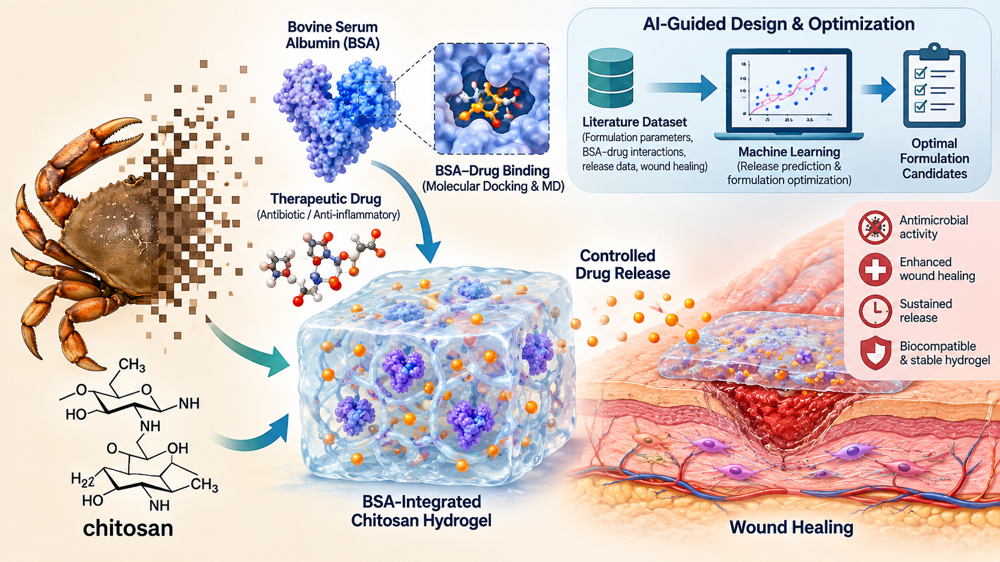
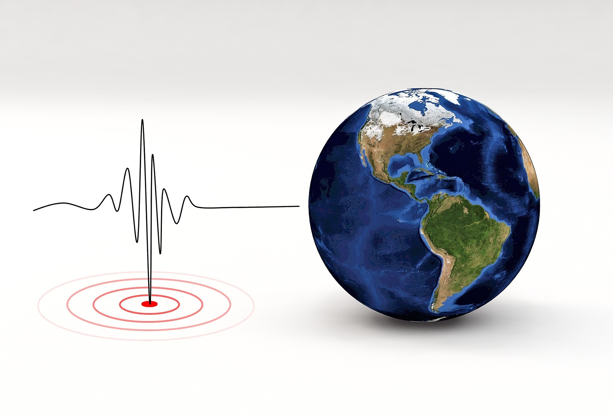

01 / COMPLETED
RNA Structure Prediction & Rapid Antiviral Drug Development — Level 1
Computational RNA structure prediction and rapid antiviral drug discovery using AI-driven scientific workflows.
From molecules to machines, signals to systems — a growing collection of things I build, model, simulate and explore.
Computational RNA structure prediction and rapid antiviral drug discovery using AI-driven scientific workflows.

Integrating molecular docking, molecular dynamics, machine learning and targeted validation to optimize controlled drug release and wound-healing biomaterials.

Experimental and machine learning insights into how site-specific acetylation influences Hsp16.3 chaperone efficiency.

Exploring seismic signals, signal processing and machine learning for earthquake forecasting.
Extending the RNA structure and antiviral discovery workflow toward more advanced computational structure prediction and drug design.

Exploring a mechanically actuated manhole concept designed to operate without external electrical power.

Engineering concept for a resilient dwelling addressing earthquake, flood, tsunami, cyclone and other severe storm hazards.

An ongoing exploration at the intersection of sensing, data, earth systems and practical disaster-awareness technology.

A technology-assisted agriculture concept focused on practical, data-informed support for farmers and agricultural decision-making.

Exploring wearable systems for identifying important health changes and connecting users with local healthcare providers.

Exploring a mechanically designed personal safety concept with emphasis on non-electronic operation, safe design and lawful use.

An ongoing independent game-development project combining puzzle mechanics, programming and playful systems design.
An ongoing game project exploring interactive storytelling, gameplay systems and digital world-building.
Creating original visual and technical assets for independent game projects and interactive experiments.